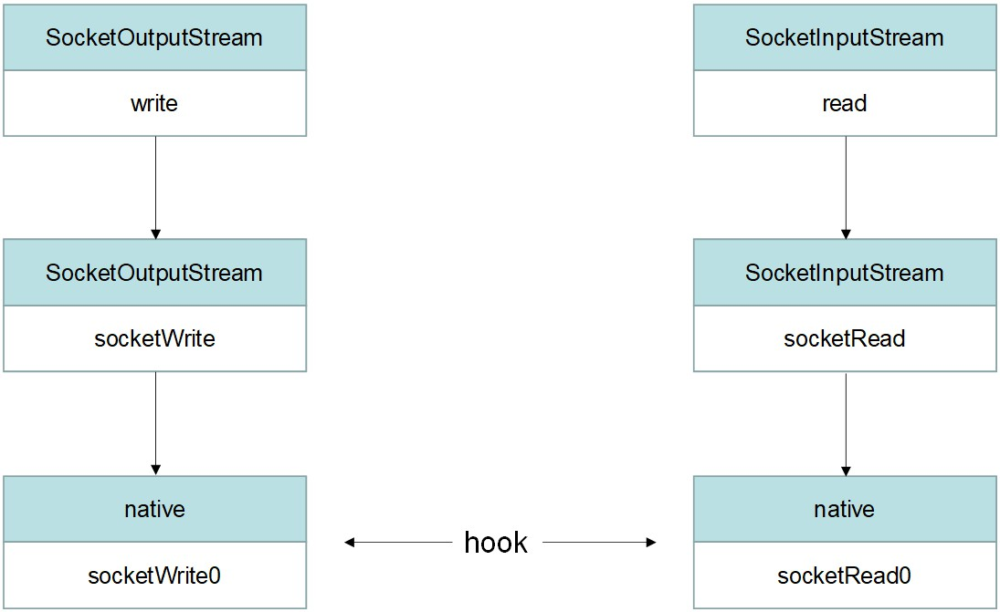
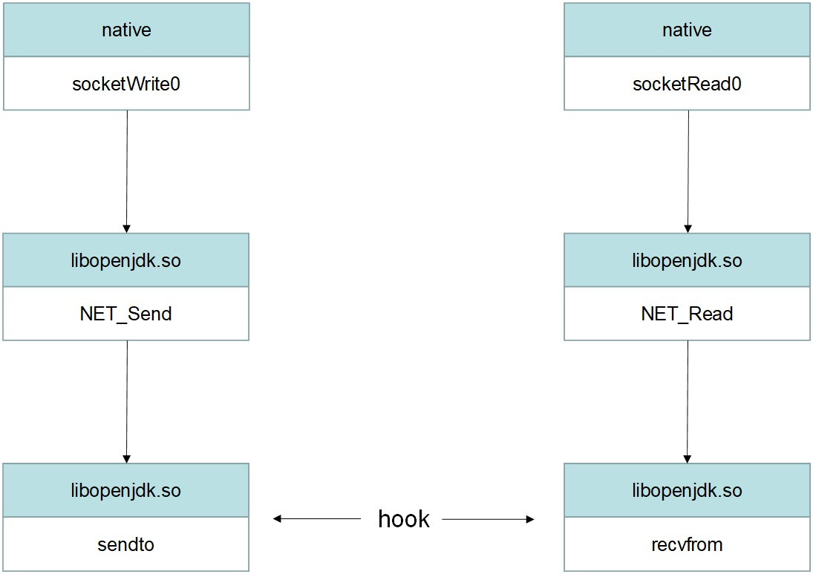
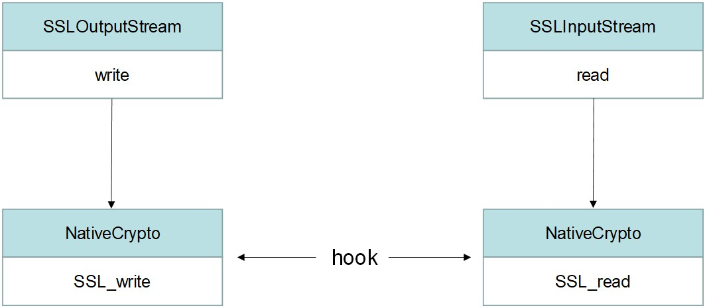
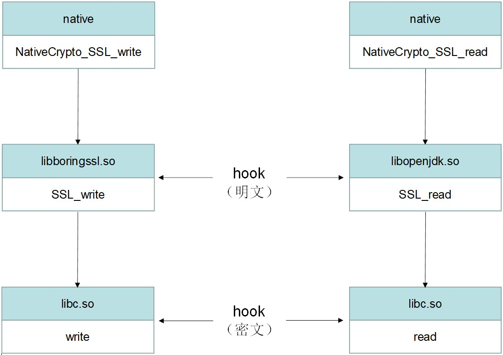

总结 Android 下的抓包对抗，方便下次做协议分析时翻出来看，算是个学习笔记，所以没什么新东西。
全局代理检测 指的是通过 adb shell settings put global http_proxy xxxx 或者在 wifi 设置里配置全局代理
检测实现：
在构建 OkHttpClient 时配置 Proxy.NO_PROXY1 2 3 4 5 6 7 8 9 10 11 12 OkHtppClient client = new OkHtppClient .Builder() .proxySelector(new proxySelector (){ @Override public List<Proxy> select (URI uri) { return Collections.singletonList(Proxy.NO_PROXY); } @Override public void connectFailed (URI uri, SocketAddress socketAddress, IOException e) { } });
System.getProperty("http.proxyHost") ，查看返回的是不是空字符串，不是则设置了全局代理
应对方法：
hook 掉改成 Proxy.getDefault
使用 vpn 代理
vpn代理检测 实现：三种检测方式
1 2 3 4 5 6 7 8 9 10 11 12 13 14 15 16 17 18 19 20 21 22 23 24 25 26 27 28 29 30 31 32 33 34 35 36 37 38 39 40 41 42 43 44 45 46 47 48 49 50 private boolean checkByNetworkCapabilities () { ConnectivityManager cm = (ConnectivityManager) getSystemService(Context.CONNECTIVITY_SERVICE); Network[] networks = cm.getAllNetworks(); for (int i = 0 ; i < networks.length; i++) { NetworkCapabilities caps = cm.getNetworkCapabilities(networks[i]); assert caps != null ; boolean transportVpn = caps.hasTransport(NetworkCapabilities.TRANSPORT_VPN); boolean notVpn = caps.hasCapability(NetworkCapabilities.NET_CAPABILITY_NOT_VPN); if (transportVpn || !notVpn) { Log.i(TAG, "[first] The VPN is active !" ); return true ; } } Log.i(TAG, "[first] no VPN !" ); return false ; } private boolean checkByConnectivityManager () { ConnectivityManager connectivityManager = (ConnectivityManager) getSystemService(Context.CONNECTIVITY_SERVICE); NetworkInfo networkInfo = connectivityManager.getNetworkInfo(ConnectivityManager.TYPE_VPN); assert networkInfo != null ; if (networkInfo.isConnected()){ Log.i(TAG, "[second] The VPN is active !" ); return true ; } Log.i(TAG, "[second] no VPN !" ); return false ; } private boolean checkByInterfaceName () { try { Enumeration<NetworkInterface> networkInterfaces = NetworkInterface.getNetworkInterfaces(); while (networkInterfaces.hasMoreElements()){ NetworkInterface networkInterface = networkInterfaces.nextElement(); String name = networkInterface.getName(); if (name.contains("tun" ) || name.equals("ppp0" )){ Log.i(TAG, "[third]The VPN is active !" ); return true ; } } } catch (SocketException e) { e.printStackTrace(); } Log.i(TAG, "[third] no VPN !" ); return false ; }
应对方法：hook 绕过
1 2 3 4 5 6 7 8 9 10 11 12 13 14 15 16 17 18 19 20 21 22 23 24 25 26 27 28 29 30 31 32 function main ( Java .perform (function ( var nc = Java .use ('android.net.NetworkCapabilities' ); nc.hasTransport .implementation = function (param: any ) { console .log ('hook hasTransport' ); return false ; } nc.hasCapability .implementation = function (param: any ) { console .log ('hook hasCapability' ); return true ; } var ni = Java .use ("android.net.NetworkInfo" ); ni.isConnected .implementation = function (param: any ) { console .log ('hook isConnected' ); return false ; } var nic = Java .use ('java.net.NetworkInterface' ); nic.getName .implementation = function (param: any ) { console .log ('hook getName' ); var name = this .getName (); if (name.indexOf ('tun' ) != -1 ) { return 'tt' ; } else if (name == 'ppp0' ) { return 'p0' ; } return name; } }); }
证书绑定（单向校验） 实现：
1 2 3 4 5 httpClient = new OkHttpClient .Builder() .sslSocketFactory(factory, (X509TrustManager)trustManagerFactory.getTrustManagers()[0 ]) .certificatePinner(certificatePinner) .hostnameVerifier(new myHostnameVerifier ()) .build();
主要有三个点：
TrustManager
CertificatePinner
HostnameVerifier
加载证书构建 TrustManager ，再创建 SSLSocketFactory
1 2 3 4 5 6 7 8 9 10 11 12 13 14 15 16 17 18 CertificateFactory certificateFactory = CertificateFactory.getInstance("X.509" );InputStream stream = getAssets().open("baidu.crt" ); Certificate ca = certificateFactory.generateCertificate(stream);KeyStore keyStore = KeyStore.getInstance(KeyStore.getDefaultType());keyStore.load(null ); keyStore.setCertificateEntry("baidu" , ca); TrustManagerFactory trustManagerFactory = TrustManagerFactory.getInstance(TrustManagerFactory.getDefaultAlgorithm());trustManagerFactory.init(keyStore); SSLContext sslContext = SSLContext.getInstance("TLS" );sslContext.init(null , trustManagerFactory.getTrustManagers(), new SecureRandom ()); SSLSocketFactory factory = sslContext.getSocketFactory();
创建 CertificatePinner
1 2 3 CertificatePinner certificatePinner = new CertificatePinner .Builder() .add("www.baidu.com" , CertificatePinner.pin(ca)) .build();
创建继承自 HostnameVerifier 的类，重载它的 verify 方法
1 2 3 4 5 6 7 8 9 10 11 12 13 14 15 16 17 18 19 20 21 private class myHostnameVerifier implements HostnameVerifier { @Override public boolean verify (String hostname, SSLSession session) { if (hostname.equals("www.baidu.com" )) { try { Certificate[] peerCertificates = session.getPeerCertificates(); Certificate peerCertificate = peerCertificates[0 ]; if (Arrays.equals(peerCertificate.getPublicKey().getEncoded(), ca.getPublicKey().getEncoded())) { return true ; } else { return false ; } } catch (SSLPeerUnverifiedException e) { e.printStackTrace(); } } return true ; } }
那么 okhttp 是怎么校验服务器证书的？整一份 okhttp3 的代码下来看看ConnectInterceptor 中。
1 2 3 4 5 6 7 public final class ConnectInterceptor implements Interceptor { @Override public Response intercept (Chain chain) throws IOException { HttpCodec httpCodec = streamAllocation.newStream(client, chain, doExtensiveHealthChecks); } }
我这里省略掉中间的方法调用，直接来到关键点okhttp3.internal.connection.RealConnection.connectTls
1 2 3 4 5 6 7 8 9 10 11 12 13 14 15 16 17 private void connectTls (ConnectionSpecSelector connectionSpecSelector) throws IOException { try { sslSocket.startHandshake(); if (!address.hostnameVerifier().verify(address.url().host(), sslSocketSession)) { } address.certificatePinner().check(address.url().host(), unverifiedHandshake.peerCertificates()); } }
来到 connectTls 方法，能看到调用了 HostnameVerifier 的 verify ，以及 CertificatePinner 的 check ，通过调试得知 sslSocket 是类 com.android.org.conscrypt.ConscryptFileDescriptorSocket 的对象，顺着 startHandshake 方法跟到 com.android.org.conscrypt.Platform.checkServerTrusted ，可以看到里面调用 X509TrustManager 的 checkServerTrusted 方法，它会在校验失败时抛出异常。
1 2 3 4 5 public static void checkServerTrusted (X509TrustManager tm, X509Certificate[] chain, String authType, AbstractConscryptSocket socket) throws CertificateException { tm.checkServerTrusted(chain, authType); }
总结一下 okhttp 做 server 证书校验的三个关键点：
TrustManager 的 checkServerTrusted
CertificatePinner 的 check
hostnameVerifier 的 verify
应对方法：
现成的 frida 脚本：
绕过针对混淆Okhttp的证书绑定 使用加载了自己证书的SSLSocketFactory frida版JustTrustMe
证书绑定（双向校验） 实现：
1 2 3 4 5 6 KeyManagerFactory keyManagerFactory = KeyManagerFactory.getInstance(SUN_X_509);KeyStore keyStore = KeyStore.getInstance("PKCS12" ); keyStore.load(keystore, "password" ); keyManagerFactory.init(keyStore); sslContext.init(keyManagerFactory.getKeyManagers(), trustManagerFactory.getTrustManagers(), new SecureRandom ());
应对方法：
底层抓包 面对一个有抓包检测的 app ，不便于找到所有检测的地方，于是会在收发包调用链选择更底层的 java 方法或 native 函数，选择 hook 或者修改源码的方式记录收发包的情况，下面这篇就整理出了几个 hook 点
[原创]android抓包学习的整理和归纳
根据这篇文章的 hook 点画几张图，看起来直观些
java 层 http 发包

native 层 http 发包

java 层 https 发包

native 层 https 发包

这种方式抓出来的数据包可读性不强，可以考虑在接近业务逻辑的java层hook抓包
结束 抓包是协议分析的第一步，注重安全的 app 都会在这设防，属于是兵家必争之地。文章记录了很多 hook 点，然而难的不是写代码 hook 这些点，难的是找到 hook 点，还是得多看源码和练习。